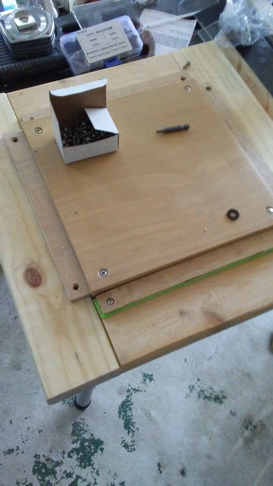
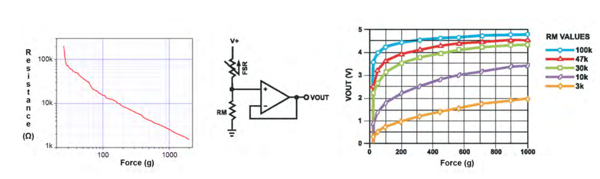
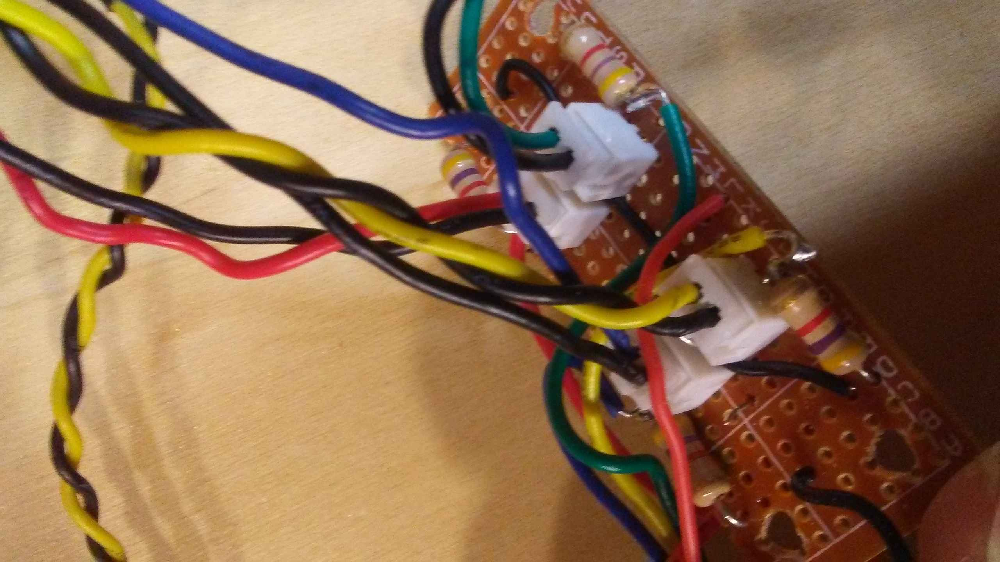
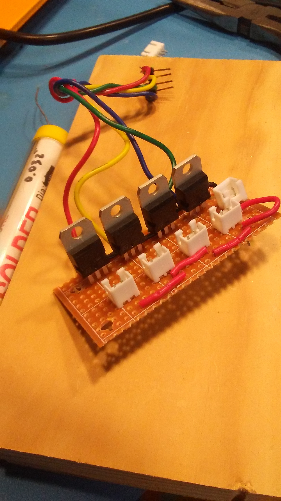
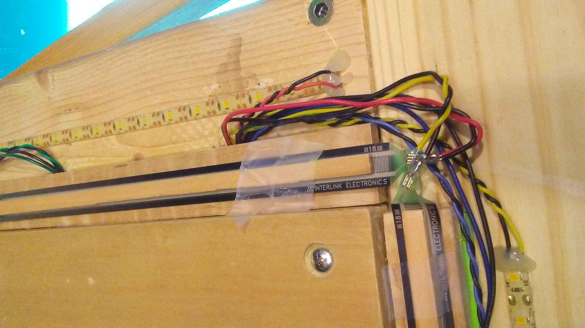
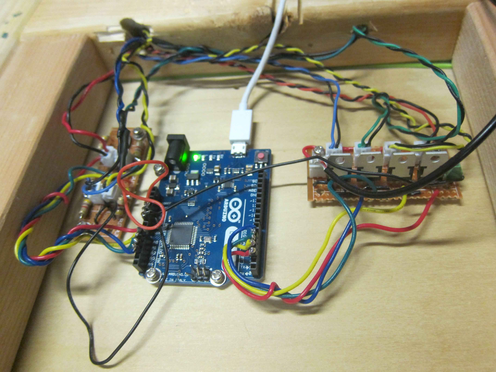
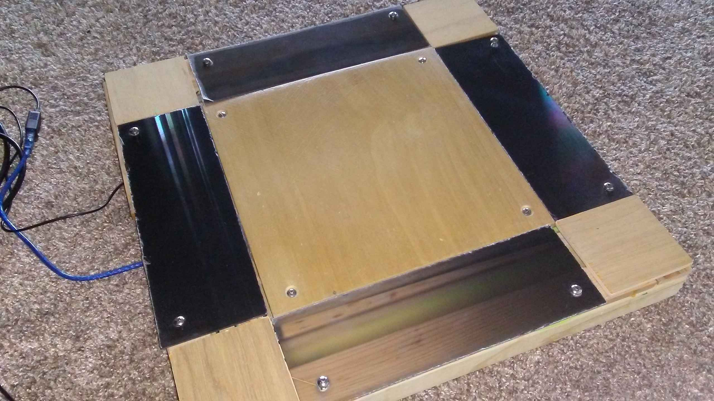

Travel Pad
March 2021
A full-sized dance pad can be a bit heavy and unwieldy so why not make a mini pad. Some people call this a travel pad, which is an acceptable name if you’re already deep in the dance community. A quick search reveals that it’s actually more commonly used to mean cloth pad used to change baby’s diapers. Perhaps the term mini-pad is snappier and memorable. :D
Unlike a real pad, you can tuck it under your arm pits and carry it like a skateboard and ride it to the moon. Portable and functional. Sure, it slips a bit during playing but nothing a few heavy bricks can’t handle. Also, does no time travel. sorry~
Table of Contents
Introduction
There are so many existing resources on why you would be interested in using Force-Sensing Resistors. The technology is relatively new, being developed in 1977 and manufactured from the 90s. The operation of the force depends on quantum tunneling. The main advantage of the sensor is its small size, its paper thin profile, its low cost and robust operating conditions and its high sensitivity. Compared to the load cells used in openpad, FSRs are easier to integrate into firmware with no more than a DC power line (5V) and a single resistor. 1
One does not have to use FSRs for a mini pad. One early Travel Pad prototype in Rembrandt’s Guide uses original DDR rubber sensors and metal L-brackets. However, acquiring these parts may be tricky (finding a domestic supplier) and more expensive (FSRs are $5 a pop).
My particular build uses FSR. These sensors are sensitive enough to pick up 10g of force. Reportedly, others have derived a working pad by simply taping them to the floor, no strings attached. These kinds of minimal builds certainly “do the job” in terms of sensing not to mention the fact that one can achieve a high performance of play with them, but they don’t provide the tactile feedback you get from a real pad.
The goal of this build was to simply make a travel pad but also permit some flexibility in making adjustments in the future. It is, at its best, a prototype meant to permit further experimentation. All the important mechanical parts are serviceable in that I can arbitrary raise and lower panels, sensors and spacing. This is something arcade owners (or dance game aficionados) do on a regular basis anyways so it made sense to build it in as a mechanism. The software side also permits arbitrary threshold adjustments thanks to Teejusb’s UI and firmware.
This write-up follows from my own experiments and is neither definitive nor comprehensive in its coverage of the topic, although there is an active community with plenty of detailed guides and information points linked below.
Frame
Being a travel pad means that the frame is smaller and easier to build. I made mine from 2x4 lumber, which is the cheapest one at my local hardware shop. My dimensions are just a bit smaller than those of Rembrandt, but the width of the panels are designed to be the same as the width of a flat 2x4 block, which is about 3 ½". Thus, the construction of the base very simple. Dowel joinery is used with a jig and base is glued. A full sized solid ¾" panel is used as the center. This center was conveniently left over from the first pad I made. It’s important that the base you fabricate lies flat and does not wobble on the surface you intend to play on. Alternatively, you can use your pad over some foam pads or other compressing surface, but this workaround detracts from its portability.

I use screw inserts that drill directly into the wood to mount my center panel. The center panel is countersunk and uses flat head machine screws (#10-24 or M6, whatever is lying around). I had previously used special bits to tap threads directly into the wood itself but I wanted to try inserts this time. It’s not clear if one is better than the other for this application but inserts are faster to install.
Sensor Mounts
I use sensor mounts bring the sensor closer to the surface since my panels are only 3/8" or ~10mm while my center panel rests on top of the base and protrudes ¾" outwards. Using some plywood and some cheap craft foam did the trick to make give me arbitrary spacing adjustment. Dominick takes a similar approach but uses plastic spacers which are laboriously hand-cut. Props to him for that.
I wanted adjustable sensor heights because it means I can pretend I am playing on DDR 3rd Mix cabinet or SMX cabs. Having played on both, I can say I like the feeling of both! As a relevant side note, I would like to mention that Zetorux likes the panels to be 3 credit cards lower than the center, which replicates the kind of feeling you’d get on a DDR X2 cabinet [video]. Flush or raised panels are also possible.

The FSRs have an adhesive on the bottom so I can tape them. A small wooden popsicle-sized stick is placed above the FSR to make sure only the active region is contacted. If your popsicle stick is uneven, or if you make custom thickness, length wooden contacts, you must make sure they make a flat, uniform contact across the active region of the FSR! If your shims are larger than the area, your sensors will not actuate!
Electronics
Pretty straightforward compared to Load cells due to simpler circuits.
Sensors
The sensor form factor I ordered of the Interlink Shop is the FSR Model 408 500mm length with tab terminators. The substrate the sensor is printed on is rather thin and bendable. Care is needed to ensure the two contacts don’t short – a proper connector is probably the best option. Since Interlink failed to send me sensors with the female terminator (as I had specified in my order), I soldered the damn thing directly to wires. There exists a method to terminate the sensors with electric tape but I would not recommend it. 2
There are couple of manufacturer recommendations. But I can give you the thick to thin:
- Use a firm and flat mounting surface
- Use a soft rubber or springy material to actuate
- Do NOT bend, dent or kink
Circuit

Some relevant graphs for force, resistance and voltage readings stolen from the manufacturer
Unlike the load cells which require an amplifier, using FSRs don’t strictly require an external amplifier (as pictured above). A simple voltage divider is sufficient and used for each of the four sensors. A resistor value of 330 Ω is recommended but the exact value depends on the sensor and setup.
What our circuit does is give us an output, V_o = V_in * R_fsr / (R + R_fsr) .
- The FSR roughly registers 100kΩ when inactive and 1kΩ when 1kg is actuated
- There is non-linear response which worsens as you increase the resistance, as a result of the equation above
Below, you can see from the resistor color codes that I am using 470Ω, which is a tad bit too sensitive and nonlinear for software adjustable thresholds.

Perfboards are used because I have those lying around and bread boards are finicky. This way I can mount them upside down on the bottom of my pad. JST XH connectors are used for quick disconnects. Still looking for a nice crimping tool to help me make better connectors. Using pliers is not good practice and has caused some problems in connectivity.
 Using some BJT (TIP-121) transistors as switches for the lights. I cut up a 5V 1A LED strip into four slices and those are JST XH terminated as well. They are externally powered by a different USB connector that is dedicated for power. These are more useful for debugging pad condition in real time.
Microcontroller
Wiring is not great, a hole routes to the bottom of the panel where are the boards are mounted.

Arduino Leonardo, Teejusb’s code. Using my own jank DIY cables to connect to the arduino which have been bolted the bottom of the center panel. Hopefully, vibration is not an issue. Yes, I am no longer using scotch tape to secure my popsicle sticks. I use hot glue and it’s not great. A thin sheet of neoprene rubber or even velcro would be preferable. It’s a work in progress after all. Yes, the wire contacts look like they could short and they did so I ended up smacking some electric tape in there but heat shrink tubes or more hot glue would have been more permanent.
 The underbelly which is exposed at the moment.
Final Impressions

It works well for stamina and timing, if your movements are minimal. Again, the primary issue is the small size of the base and panels, which can cause wobbling if you either step near the edges of the pad causing it to tilt and shift during play. The supporting panels aren’t glued into place, so the pads are also rather noisy compared to real arcade panels (but less so compared to pads that aren’t balanced – looking at you 8otb machine).
Playing on carpet is annoying but less so than tiled stone flooring, due to the excessive movement. Still, not bad for testing out FSRs and finding a comfortable mechanical adjustments for a desirable final pad build. The experiment gives me the confidence and experience needed to go full out on the next prototype.
Future Work
Building a full sized pads with FSRs, using multiple FSRs, maybe custom PCB, maybe analog MUX, color RGB lights, modifying firmware for saving levels maybe in the EEPROM or it’s own flash code somehow. Acrylic / polycarbonate panels with art design, a proper bar (welding?)
Well, everything short of buying an actual manufactured arcade cabinet and pads. :D
Appendix
Links
- Sereni’s Mechanical FSR Guide on github
- Renbrandt’s Travel Pad Guide google docs
- Teejusb arduino/teensey firmware on github
- Dom ITG’s informational videos playlist on youtube
- greentea’s hack on cutting up FSR on youtube
- Good source of FSR for US shop
- Jonx on the great DDR X2 cab video
- Stamina Nation Discord #pad pubilc invite
Bill of Materials
By popular request, I have complied this table for reference. Note it does not include any tools I have used including woodworking tools, soldering irons, crimpers, etc. Because I am lazy, I prioritized using what I had accumulated from other projects or part bins instead of buying a better more specialized part.
I hesistate to provide detailed instructions as I want to inspire rather than instruct. They are definitely alternative and better materials, methods and so forth, to arrive at an ideal pad. Nonetheless, for people who are just getting started, this is meant to serve as general guidance. As such, I have ballparked the prices to give you a reasonable way to play catch in the ball park.
| Part | Source | Cost |
|---|---|---|
| 2x4 | local hardware | 10 |
| plywood | local hardware | 10 |
| #10-24 screws | McMaster Carr | 8 |
| #10-24 screw wood insert | McMaster Carr | 7 |
| foam sheet | art store | 5 |
| wooden fluted dowels | local hardware | 4 |
| center panel ¾" wood slab | localhardware | 7 |
| Side panel acrylic 3/16" | junk | 20? |
| FSR sensors | interlink | 25 |
| arduino leonardo | amazon | 10 |
| header pins 0.1" pitch | digikey | 3 |
| JST XH 2pin set | aliexpress | 7 |
| resistors | digikey | 1 |
| Transistors TIP 121 | digikey | 4 |
| led strip | aliexpress | 4 |
| protoboard | aliexpress | 5 |
| wire (22 gauge) | ebay | 18 |
Total: ~150
In addition to these materials, you may find it helpful to have something that can / know someone who can:
- cuts wood / plastic
- drills holes
- planes wood
- glues wood
- build circuits
- installs and removes screws
- measures voltages and electrical connectivity
Footnotes
- I know that electronic piano keyboards have pressure sensitivity detection to simulate loudness dynamics of a real piano’s hammer action – through it’s strangely titled velocity. Turns out these keyboards don’t have a singular sensitivity sensor to acquire this data. Instead, there are two contacts in a single key which are placed at different distances from the receiver. Thus, the firmware literally measures the velocity of the strike by taking the different in time and assigning the Note trigger ON a velocity value based on that timing difference. Needless to say, this probably won’t give us what dance players are looking for, a sharp hysteresis curve.↩
- I had originally seen a video which Youtuber greenTea cuts these long sensors into several smaller ones. He then shoves two cables and duct tapes them into place in a somewhat jank way. I found that this method of termination does not guarantee a strong contact between the wire and sensor. In other words, the electrical connection is a weak one and prone to disconnection. A better way to attach the FSR.↩